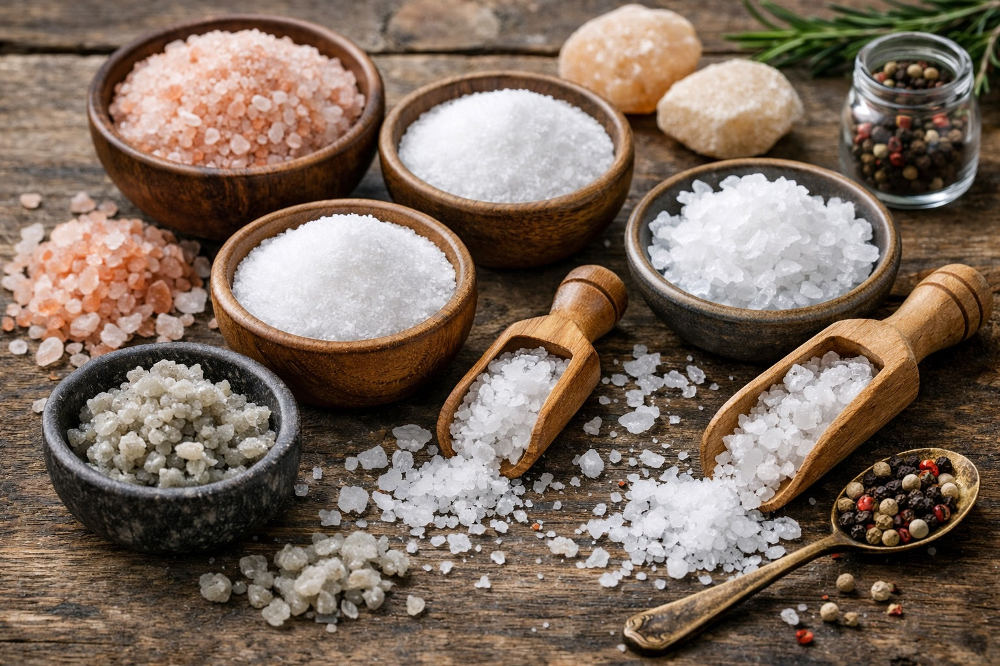

Superfoods: Salt
Last updated: January 2026

- Salt is essential for nerve signaling, hydration, and metabolic stability.
- Problems usually stem from processed foods, not salt itself.
- Mineral-rich salts can support balance better than refined table salt.
- Using salt intentionally is different from consuming excess hidden sodium.
Purpose: Reframe salt as a misunderstood but essential element of resilience—especially during stress, heat, illness, or metabolic strain.
Why salt became controversial
Salt’s reputation collapsed alongside the rise of industrial food. Processed foods concentrate sodium without fiber, potassium, or magnesium to balance it. The result wasn’t just higher intake—it was imbalance.
Public health guidance often responded with blanket “reduce salt” messaging. While helpful for populations consuming large amounts of ultra‑processed food, this message obscured salt’s fundamental biological role—especially for people eating mostly whole foods.
What salt actually does in the body
Salt isn’t just seasoning. Sodium and chloride are critical electrolytes involved in:
- Nerve impulse transmission and muscle contraction
- Maintaining blood volume and circulation
- Hydration and cellular fluid balance
- Adrenal and stress-response signaling
Low or imbalanced sodium intake—especially when combined with high stress, sweating, or low-carb diets—can contribute to fatigue, dizziness, headaches, and brain fog.
Types of salt (and why they differ)
Not all salt is the same. The differences aren’t dramatic, but they matter over time.
- Refined table salt: Highly processed, stripped of trace minerals, often includes anti-caking agents.
- Sea salt: Retains small amounts of minerals depending on source and processing.
- Himalayan pink salt: Contains trace minerals; flavor and composition vary by mine.
- Celtic gray salt: Moist, mineral-rich, often favored for everyday use.
Trace minerals won’t replace a balanced diet, but mineral-rich salts tend to integrate more smoothly into hydration and digestion.
Salt, blood pressure, and context
Salt sensitivity varies. For some individuals—especially with kidney disease or specific genetic factors—excess sodium can raise blood pressure. For many others, especially those eating whole foods, sodium intake has a weaker relationship with hypertension than once believed.
Potassium intake, insulin resistance, stress levels, and overall diet quality often matter more than sodium alone.
When salt becomes a problem
Salt itself is rarely the root issue. Problems arise when sodium intake is disconnected from context. Ultra‑processed foods concentrate sodium alongside refined carbohydrates, seed oils, and additives, creating metabolic stress rather than balance.
Salt can also become problematic when:
- It replaces potassium‑rich whole foods
- Kidney function is impaired
- Chronic dehydration or high sugar intake is present
- Stress hormones remain elevated for long periods
In these situations, reducing processed food and improving mineral balance is often more effective than indiscriminately cutting salt.
Using salt intentionally
Think of salt as a support tool, not a free-for-all.
- Salt whole foods at home rather than relying on packaged meals.
- Pair sodium with potassium-rich foods (vegetables, beans, fruit).
- Increase slightly during heat, illness, intense exercise, or fasting.
- Taste your food—cravings often signal need, not indulgence.
Electrolytes Without Sports Drinks
Most commercial electrolyte and sports drinks contain artificial dyes, flavorings, and excessive sugar. You don’t need them to maintain electrolyte balance.
Simple alternatives include:
- Water with a pinch of mineral salt
- Homemade broth or bone broth
- Mineral water paired with whole foods
These options support hydration without spiking blood sugar or introducing unnecessary chemicals.
Salt vs Sugar: What Actually Drives Hypertension?
While salt is often blamed for high blood pressure, emerging research suggests refined sugar and insulin resistance play a far larger role. High sugar intake promotes inflammation, fluid retention, and vascular stress.
In contrast, adequate salt intake — especially within whole-food diets — can stabilize blood volume and reduce stress hormones. Context matters more than isolated nutrients.
Practical daily ideas
A pinch of mineral salt in cooking, soups, or even water during hot days can improve hydration and clarity. Simple broths, lightly salted eggs, or vegetables seasoned with olive oil and salt are timeless, resilient staples.
FAQ
Is salt addictive?
Ultra-processed foods can train taste preferences. Whole foods seasoned with salt tend to self-regulate appetite more naturally.
Should I avoid salt if I have high blood pressure?
It depends. Many people benefit more from improving potassium intake, reducing sugar, and lowering stress. Consult a clinician if unsure.
Next steps
Continue with other Superfoods articles.
This article focuses on general food quality and metabolic resilience, not medical advice.